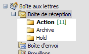

Une Inbox vide pour un esprit libre

Si vous avez suivi le billet d’hier, vous n’avez plus qu’un sous-dossier dans votre Inbox, Archive, ce qui en plus du temps de classement gagné est assez relaxant : si ce n’est pas là, pas la peine de chercher ailleurs.
Maintenant, votre Inbox déborde toujours : il y a 200 mails dedans, dont 150 non lus et 50 qui sont des discussions en cours, ou bien des actions que vous ferez plus tard, quand vous aurez le temps, mais vu qu’il y a 150 mails non lus et qu’il arrive 10 nouveaux mails chaque heure ce n’est pas pour aujourd’hui !
C’est là qu’intervient GTD. GTD (Getting Things Done) est une méthode de productivité très en vogue chez nos amis anglosaxons, dont l’idée de base est que lorsque notre cerveau a trop de choses à retenir, il se bloque : on est tellement occupés à ne rien oublier qu’on n’arrive plus à se concentrer sur une action précise pour l’accomplir. Il s’agit donc de se libérer l’esprit, en mettant au point un système qui nous mettra sous le nez les bonnes actions et les bonnes infos au moment où on en aura besoin.
Appliqué à la gestion d’email, cela signifie avoir le courage de jeter tout ce qui n’est pas important, faire tout ce qui peut être fait rapidement, mettre les autres actions dans une todo list, et archiver tout le reste.
Avant de commencer il faut bien garder à l’esprit que l’email n’est qu’un medium dont la fin est de nous permettre de faire des actions. Pas de sentimentalisme, on peut supprimer les mails inutiles. Et tout ce qui pourrait être utile quelques semaines plus tard, une fois archivé, pourra être retrouvé en une poignée de secondes avec les outils de recherche évoqués hier.
C’est parti : créez deux nouveaux sous-répertoires dans votre Inbox, Action et Hold (avec Archive, le Trusted Trio). Puis attaquez-vous à l’Inbox. Le but est de la vider : Inbox zero. Prenez les mails un par un, en partant du plus vieux ou du plus récent (personnellement je partirais du plus récent mais faites comme vous préférez), et appliquez la méthode suivante :
- si ce n’est pas important et que ça ne risque pas de le devenir, supprimez, si vous hésitez passez à l’étape suivante ;
- si c’est une information, lisez-la puis rangez-la dans Archive (notez qu’un document de 10 pages à lire n’est pas une information, c’est une action) ;
- si c’est une action qui prend moins de 2 minutes montre en main, faites-la tout de suite (ça prendrait plus de temps de la ranger maintenant et de la ressortir plus tard), puis archivez ;
- si votre action a consisté à déléguer et/ou que vous attendez une réponse, copiez votre message dans Hold ;
- si c’est une action qui prend plus de 2 minutes, rangez-la dans Action.
Continuez jusqu’à l’Inbox zero. Ne vous laissez pas embarquer dans une action qui vous prendrait plus de 2 minutes. Si vous avez 200 mails à traiter et que 10% sont actionnables, dont la moitié en moins de 2 minutes, vous en avez pour 40 minutes. Ce n’est pas cher payé pour passer d’une Inbox pleine à craquer et génératrice de stress, à une Inbox vide et une liste de 10 actions lisibles en un clic dans Action ! Quant aux gens qui risquent de ne pas vous répondre, vous pouvez être tranquilles puisque toutes les réponses en attente sont dans Hold.
Désormais, chaque fois que vous checkez vos mails, traitez jusqu’à l’Inbox zero. Si vous ne le faites pas, ça revient à les traiter deux fois.
Si des mois d’incurie font que votre Inbox ne contient pas 200 mails mais 1000, déplacez les 800 plus vieux dans un sous-dossier DMZ que vous traiterez un peu chaque jour. Il n’y a pas de recette miracle pour tout traiter d’un claquement de doigts, et l’essentiel est de mettre en place le système : vider l’Inbox et la garder vide.
Astuce : Avec Outlook, vous pouvez affecter des raccourcis-clavier aux 3 dossiers pour accélérer le traitement, et vous pouvez également afficher le nombre de mails de Action et Hold (pas seulement les non-lus) : clic-droit sur le dossier, Propriétés, puis Afficher le nombre total d’éléments dans l’onglet Général.
Demain nous verrons comment traiter efficacement le dossier Action.